AIP-C01 Crash Course
This is the whole exam in one volume. Every domain distilled to what you must recall under time pressure: decision rules, numbers, trap patterns, and rapid-fire practice. Read it straight through once, then use the per-domain question sets to drill what you miss. If you can answer every rapid-fire question here cold, you can answer every item on the exam.
The exam in 30 seconds
| Fact | Value |
|---|---|
| Questions | 75 total (65 scored, 10 unscored; you cannot tell which are which, so treat all as scored) |
| Time | 180 minutes, about 2.4 minutes per question |
| Pass | 750 out of 1000 (scaled score) |
| Cost | $300 |
| Formats | Multiple choice (one answer) and multiple response (select 2 or 3, no partial credit) |
| D1 Foundation Models, Data & Compliance | 31% (about 20 scored questions) |
| D2 Implementation & Integration | 26% (about 17 scored questions) |
| D3 AI Safety, Security & Governance | 20% (about 13 scored questions) |
| D4 Operational Efficiency & Optimization | 12% (about 8 scored questions) |
| D5 Testing, Validation & Troubleshooting | 11% (about 7 scored questions) |
The pattern: a multi-paragraph company scenario, two to four hard requirements, four long plausible options. Three options are good ideas in the wrong context. One satisfies every constraint at once. Read the scenario for the killer constraint first, then compare the survivors.
The adjectives in the stem decide: "least operational overhead" points at the fewest self-managed components, "least custom development effort" points at managed features over your own code, and "most cost-effective" points at token math. Premium extras with no stated need always lose.
How to use this volume
- 10 minutes: read the exam facts above, the numbers sheet, and the top 50 traps.
- 1 hour: add the per-domain decision rules (the "if X, pick Y" lines) to your recall.
- 1 day: drill all 58 rapid-fire questions, then re-read the rules behind every one you missed. Missed five or fewer total? Schedule the exam.
Prerequisite map: the three volumes that come before this one
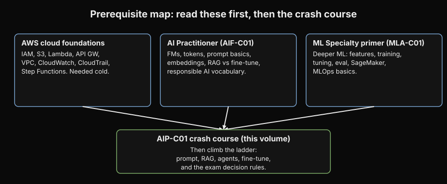
AIP-C01 assumes two kinds of background: general AWS fluency and basic AI literacy. If either is shaky, read the matching prerequisite volume first. This crash course does not re-teach them.
- AWS cloud foundations: the AWS core AIP-C01 leans on. IAM (users, roles, policies, least privilege), S3 (object storage, versioning, event notifications), Lambda (serverless functions), API Gateway (REST and HTTP APIs), VPC (subnets, endpoints, PrivateLink), CloudWatch (metrics, logs, alarms), CloudTrail (API audit), EventBridge, SQS, SNS, Step Functions basics. You need these cold: the exam phrases answers in terms of these services and expects you to know their limits (for example, Lambda's 15-minute ceiling) without being told.
- AI Practitioner (AIF-C01): the AI literacy layer. What a foundation model is, tokens and context windows, prompt engineering basics, embeddings as meaning-vectors, fine-tuning versus RAG at a conceptual level, responsible AI vocabulary (bias, fairness, hallucination, toxicity), and the AWS AI service map (Bedrock, SageMaker, Comprehend, Rekognition, Transcribe, Textract). This is the vocabulary the exam speaks; without it the domain volumes read as jargon.
- ML Specialty primer (MLA-C01): the deeper ML layer for questions that reach past GenAI. Data preparation and feature engineering, training and tuning concepts, model evaluation metrics (accuracy, precision, recall, F1, ROC), SageMaker training and deployment pieces, and ML operations (pipelines, monitoring, drift). AIP-C01 touches these where GenAI meets classic ML, mostly in evaluation and data pipeline questions.
Rule of thumb: if you can explain IAM least privilege, S3 event notifications, and what an embedding is without pausing, skip the prereqs and start at D1 below.
D1: Foundation Models, Data & Compliance (31%)
The biggest domain and the one that sets the vocabulary for everything after it. D1 tests three things: which GenAI approach fits the scenario, how to call and feed Bedrock models correctly, and how to keep data compliant while doing it. Nearly every question reduces to the approach ladder plus one API or service detail.
The approach ladder: climb only when the cheaper rung fails
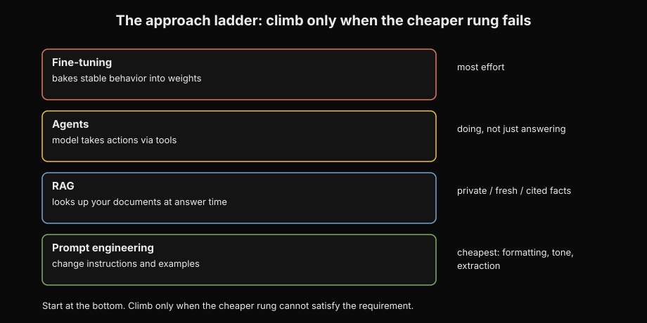
A foundation model is a large model pre-trained on broad data that you adapt instead of training from scratch. Amazon Bedrock is the managed AWS service that serves foundation models from multiple providers (Anthropic Claude, Meta Llama, Mistral, Cohere, Amazon Titan and Nova, AI21, Stability) through one set of APIs, so you never manage GPUs. The ladder is the order you try solutions, cheapest first.
Prompt engineering is the bottom rung: you change instructions and examples in the prompt. No new knowledge, no training, no new cost. It solves formatting, tone, extraction structure, and simple classification. RAG (Retrieval-Augmented Generation) is the next rung: the model looks up facts from your documents at answer time and cites them. It solves private, changing, or cited knowledge the model was never trained on. Agents come next: the model takes actions through tools, calling APIs, querying databases, and running multi-step plans. This rung solves anything that needs doing, not just answering. Fine-tuning is the top rung: you retrain parts of the model on labeled examples so a new behavior is baked into the weights. It solves stable behavior, tone, and format requirements that prompts cannot reliably hold.
The rule: start at the bottom and climb only when the cheaper rung cannot satisfy a stated requirement. "Documents change" kills fine-tuning (weights go stale). "Must cite sources" kills fine-tuning (weights cannot cite pages). "Takes actions" kills RAG (knowledge bases do not call APIs). "New tone" kills RAG (retrieval does not change behavior). Read the requirement, find which rung it names, and pick the cheapest rung that satisfies all of them.
Picking the model: filter, then rank
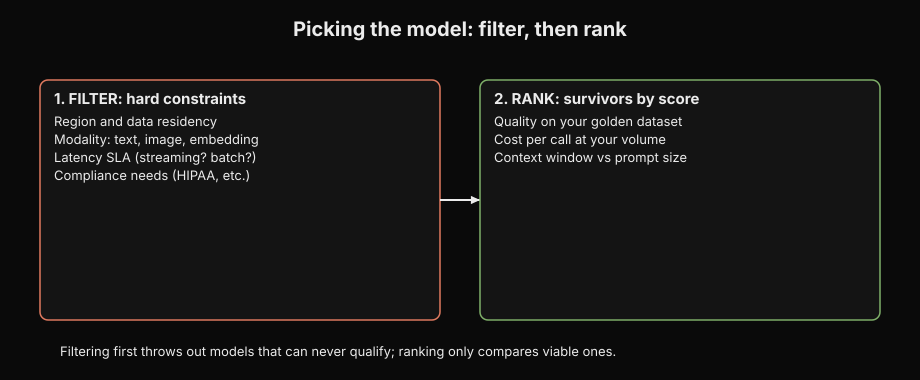
Model selection is a filtering process, not a popularity contest. First filter by capability floor: run candidate models on a golden dataset (a small set of prompts with known-good answers) and drop anything below your quality bar. Provider benchmarks never clear this bar for you; they measure the provider's prompts, not yours. Second filter by regional availability: Bedrock publishes a supported-model list per region, and a model in us-east-1 may not exist in eu-west-1. Model access itself is a one-time console action per model per region and costs nothing to enable. Third, rank the survivors by cost and latency: measure tokens per request and time to first token on realistic inputs. Fourth, check the context window (the maximum tokens a model accepts in one call, model-specific; flagships handle hundreds of thousands, small models tens of thousands) against your longest realistic input plus expected output. If the input does not fit, you need chunking, summarization, or a bigger window. The survivor with the lowest cost that clears every bar wins. Revisit quarterly: prices and capabilities move.
Two availability tools, never swapped. Cross-region inference profiles route requests across regions for resilience: if one region is throttled or down, traffic fails over. They are the answer to "model X is only in two regions and we need resilience." They die under data-residency constraints, because routing across regions moves data across regions. Prompt routers (also called model routers) route by predicted prompt complexity for cost: simple queries go to a cheap lightweight model, hard ones escalate to the flagship. They are the answer to "80% of our traffic is simple FAQ on an expensive model." Router for cost, profile for availability. The exam tests this pair directly and often.
Calling the model: four APIs, one decision
Converse is the unified Bedrock runtime API. One request shape, modelId, messages (user and assistant roles), system, inferenceConfig (maxTokens, temperature, topP, stopSequences), optional toolConfig (function definitions), optional guardrailConfig (attaches a Bedrock Guardrail, the content filters and policy checks taught fully in D3, by guardrail identifier plus version, with a trace flag), optional cachePoint (prompt caching marker), and additionalModelRequestFields (the escape hatch for provider-specific extras). It works across providers and is the default for text generation, tool use, and inline guardrails.
InvokeModel is the original API: you send the provider's raw JSON body and get the provider's raw response. For Claude you must include anthropic_version: "bedrock-2023-05-31" and max_tokens or the call fails with a validation error. InvokeModel is the ONLY path for embeddings, because Converse is text-generation only. The exam offers Converse as a distractor for embedding tasks and it is always wrong.
Reading a Converse response: output.message.content is a list of content blocks, and stopReason tells you why generation ended. end_turn means finished. max_tokens means the output was cut mid-generation, not finished; a clean-looking answer with this stop reason is truncated, so raise maxTokens or shorten the input. guardrail_intervened means the guardrail blocked the call.
Latency and cost have their own call shapes. Streaming (ConverseStream, InvokeModelWithResponseStream) returns tokens as generated. It changes perceived latency, not total time: a chat that starts answering in under a second feels fast even if the full answer takes ten seconds. Streaming is the answer to "users report slow responses" on interactive traffic. Batch inference is the offline shape: a JSONL file (one JSON object per line) into S3, results out to S3, hours of latency, roughly 50 percent cheaper per token than on-demand. It is the answer to "cheapest for nightly bulk work with no SLA." Never for interactive SLAs. Async invocation (start_async_invoke) is the single-slow-request shape: one prompt nobody waits on, result lands in S3. Batch is many prompts from S3, async is one slow prompt, streaming is tokens to a waiting user.
Prompt caching needs exactly one precondition: a repeated long prefix, usually a long system prompt or document block shared across many calls. Mark the boundary with cachePoint; cache hits bill at a reduced input-token rate. The prefix minimum is model-dependent, on the order of a thousand tokens. The cache TTL is 5 minutes by default, up to 1 hour on supported models. Unique traffic makes caching dead weight: no repeated prefix, no savings. The metric that proves caching works is cache read hit rate, not total token spend.
RAG in depth: the most tested pattern in the domain
RAG grounds the model in your documents. At ingestion, documents are chunked (split into pieces small enough to fit the context window and focused enough to match precisely), each chunk is converted to an embedding (a vector of numbers where similar meanings sit close together), and vectors plus text plus metadata land in a vector store. At query time the question is embedded with the same model, the store returns the nearest chunks, and the model generates an answer citing them. An Amazon Bedrock Knowledge Base is the managed version: point it at data sources (S3, web crawlers, Confluence, SharePoint, Salesforce), it handles chunking, embedding, storage, and sync, and RetrieveAndGenerate does the whole loop in one call.

Embeddings have two exam-relevant choices. Amazon Titan Text Embeddings v2 is the cheap default with configurable dimensions: 1024, 512, or 256. Dropping from 1024 to 256 cuts vector storage to a quarter and speeds search, with an accuracy trade-off you measure on a golden dataset. Cohere Embed is the multilingual pick (100+ languages) and takes an input_type parameter, search_query versus search_document, because it embeds queries and documents with different prefixes optimized for each role. Embedding calls go through InvokeModel, never Converse.
The iron rule of retrieval: the same embedding model and dimensions at ingestion and query time, or retrieval silently breaks because the vector spaces do not align. "Answers went confident-but-wrong after a re-sync" means the re-sync changed the embedding model version or the chunking config. Debug the change.
Vector store choice follows data size. Small datasets (under about a million records) go to Aurora Serverless with pgvector: fewest self-managed components, the "least operational overhead" answer. Large datasets go to OpenSearch Serverless with approximate search (HNSW or IVFFlat indexes, approximate index types that trade a small recall loss for large speedups). "100% recall required on small data" means exact flat search: approximate indexes trade recall for speed by design, and small data makes the exact scan affordable. Never embed relational tables into a vector store: structured data with SQL-shaped questions gets text-to-SQL against RDS or Aurora, not chunks. Unstructured documents (PDF, HTML, Word) belong in the knowledge base.
Two quality upgrades the exam names. Hybrid search combines keyword (BM25, the classic keyword-ranking formula) matching with vector similarity so exact terms and meaning both count. A reranker (Cohere Rerank on Bedrock) re-scores the top retrieved chunks with a stronger model and keeps the best. Together they are the answer to "retrieval quality is too low and we have done the basics." The failure checklist for silent retrieval problems: embedding model mismatch between ingest and query, chunk boundaries that split key facts across chunks, and a knowledge base sync that is not in-sync.
Custom models: behavior, not knowledge
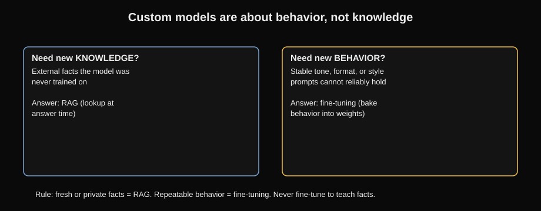
Bedrock offers four ways to adapt a model, and the exam tests which gap each one fills. Fine-tuning (supervised) trains on labeled prompt-and-response pairs in S3 and teaches behavior: support tone, classification, response format. Useful runs start at hundreds to a few thousand high-quality labeled examples; quality beats quantity. Continued pre-training trains further on unlabeled domain text and teaches vocabulary and domain knowledge. Distillation trains a small cheap student model to imitate a large teacher on one narrow task: near-teacher quality at student cost, the answer to "same narrow task millions of times, cost is the problem." Imported models bring weights you customized elsewhere into Bedrock to serve through Bedrock APIs. On the SageMaker side the same idea appears as LoRA (Low-Rank Adaptation): train only small weight deltas (adapters) instead of all weights, then version them in the SageMaker Model Registry with pipelines and rollback.
A fine-tuning job reads training and validation files from S3, runs for hours, and produces a custom model with its own ARN (Amazon Resource Name, the unique ID of any AWS resource). Serving it usually requires Provisioned Throughput (reserved inference capacity, taught in the next section; an exception: some models, like Nova custom models, support on-demand). "The customization job succeeded but calls fail" points at missing throughput, not bad training data. And the master trap of the whole domain: fine-tuning for knowledge instead of behavior. Quarterly document updates, citations, fresh facts: RAG. Tone, format, stable behavior: fine-tuning. The exam will dress a knowledge problem in behavior clothing; read the requirement, not the costume.
Capacity and cost levers: PT, profiles, routers
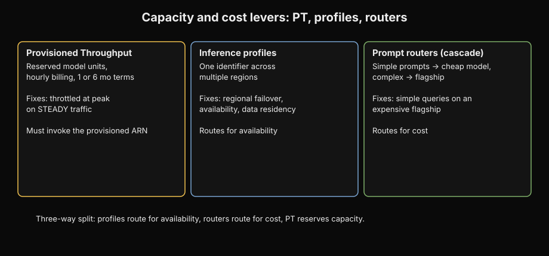
Provisioned Throughput (PT) is reserved inference capacity. You buy model units (a fixed amount of processing capacity for one model) on a commitment term, commonly 1 month or 6 months, and pay an hourly rate per unit whether you use it or not. In exchange, requests to your provisioned model ARN get dedicated capacity: consistent latency and no throttling from shared on-demand quotas. Create it with CreateProvisionedModelThroughput; invocations must target the returned provisioned model ARN, not the base model ID. "Bought PT but still throttles" means the code passes the base model ID instead of the provisioned ARN.
PT is a latency and capacity guarantee for steady production baselines, not a discount for spiky traffic: idle hours still bill, so bursty workloads stay on on-demand.
The three-way confusion set, tested repeatedly: inference profiles route for availability across regions, prompt routers route for cost by prompt complexity, Provisioned Throughput reserves capacity by the hour. Regional failover wants a profile. Simple queries on an expensive flagship want a router. Throttled at peak on steady traffic wants PT. The exam also tests the cascade pattern behind routers: a small classifier sends simple requests (classification, extraction, short answers) to a cheap lightweight model and escalates only complex ones to the flagship. Right-sizing, choosing the smallest model that clears the quality bar, is the same instinct stated once.
Data protection and compliance
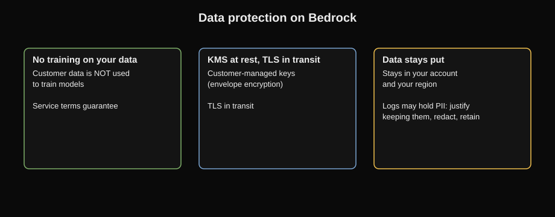
Bedrock traffic stays private through VPC interface endpoints (PrivateLink) for the Bedrock, Bedrock runtime, agent, and agent-runtime APIs. No NAT gateway, no public internet. IAM policies scope which identities can invoke which model, knowledge base, and agent ARNs. KMS encrypts data at rest (envelope encryption with customer-managed keys), TLS encrypts it in transit. Customer data sent to Bedrock is not used to train models under the service terms, and data you choose to log stays in your account.
The PII pipeline is three services in order. Amazon Macie discovers PII at scale sitting in S3: it scans buckets and flags sensitive data before ingestion. Amazon Comprehend detects PII entities in live text in real time (30+ entity types: names, SSNs, account numbers). Bedrock Guardrails sensitive-information filters block or mask PII at the model boundary, on inputs and outputs. Macie finds it at rest, Comprehend detects it in flight, Guardrails filter it at inference. In compliance-heavy scenarios, question whether model invocation logging (the opt-in record of full prompt and response text, routable to S3 or CloudWatch, KMS-encryptable) should exist at all: logs can contain PII, so retention policies and redaction are part of the design.
D1 decision rules: if the stem says X, pick Y
- "Facts change over time" or "must cite sources" → RAG with Knowledge Bases. Never fine-tuning.
- "New tone, format, style, behavior" → fine-tuning or prompt engineering. Never RAG.
- "Take actions," "call APIs," "multi-step with tools" → Bedrock Agents. Knowledge bases do not act.
- "Unstructured docs (PDF, HTML)" → Knowledge Bases. "Relational data, SQL questions" → text-to-SQL on RDS. Never embed tables into a vector store.
- "Small vector dataset" (under ~1M records) → Aurora Serverless with pgvector. "Large" → OpenSearch Serverless. "100% recall on small data" → exact flat search.
- "Throttled at peak, steady traffic" → Provisioned Throughput (pass the provisioned ARN as modelId). "Spiky or low traffic" → on-demand.
- "Regional failover, resilience" → cross-region inference profiles. Dead under data-residency constraints.
- "Simple queries on an expensive model" → prompt router or cascade. Never PT for a cost problem.
- "Repeated long system prompt" → prompt caching (cachePoint, cache read hit rate as proof). "Unique interactions" → streaming or a smaller model.
- "Users report slow responses" → streaming (ConverseStream) for perceived latency. PT fixes capacity, not first-token speed.
- "Cheapest for nightly bulk work, no SLA" → batch inference (JSONL into S3, results to S3, ~50% off).
- "Swap models without redeploying" → model ID in AppConfig (AWS's runtime configuration service), read at runtime. CloudFormation (infrastructure-as-code deployment) changes are deployments.
- "Embeddings" → InvokeModel, never Converse. Same model and dimensions at ingest and query.
- "Answers confident but wrong after a re-sync" → check embedding model version and chunking drift. Debug the change.
- "PII across S3 buckets" → Macie. "PII in live text" → Comprehend. "Redact at call time" → Guardrails.
- "No public internet" → VPC interface endpoints. NAT gateway violates the constraint.
D1 trap patterns
- Fine-tuning for knowledge (quarterly docs, citations, fresh facts). Always RAG.
- Converse offered for an embeddings task. Converse is text generation only.
- Guardrails assumed to work only with Converse. The standalone ApplyGuardrail API covers any text, including external models.
- Provider benchmarks deciding the model choice. Only your own golden-dataset eval counts.
- AccessDenied on InvokeModel debugged as IAM. Check model access and regional availability first.
- Missing
anthropic_versionormax_tokensin a Claude InvokeModel body, then an hour of IAM debugging. The error is the request shape. - Cross-region inference profile under a data-residency constraint. Profiles move data across regions.
- Provisioned Throughput as a cost fix for bursty traffic. PT bills hourly whether used or not.
- Prompt caching on unique traffic. No repeated prefix, no savings.
- ElastiCache as a vector store. It is ephemeral caching; durable vectors live in a vector store.
- Kendra offered for RAG. Kendra is enterprise search, not the RAG path.
- stopReason
max_tokensread as "finished." It means the output was cut. - Temperature and topP both set. They interact; pick one.
D1 rapid-fire questions
D1 · EASY · ONE ANSWER
CC01. A retailer wants a chatbot that answers questions from its 2,000-page returns policy. The policy changes every quarter and every answer must cite the exact section. Which approach first?
Why B is correct: changing private knowledge plus citations is the textbook RAG requirement set, and Knowledge Bases handle ingestion, chunking, and sync with no training.
The trap: "fine-tune" whenever documents change. Changing knowledge is RAG, always.
D1 · EASY · ONE ANSWER
CC02. 90% of prompts share a 4,000-token system prompt and costs are rising. Which lever?
Why A is correct: a repeated long prefix is caching's only precondition, and this stem hands it to you. Proof it works: cache read hit rate.
D1 · MEDIUM · ONE ANSWER
CC03. A team needs embeddings for a knowledge base. Which API?
Why B is correct: embeddings are a provider-specific feature, so they go through InvokeModel. Titan Text Embeddings v2 (1024/512/256 dims) or Cohere Embed (100+ languages, input_type search_query/search_document).
D1 · MEDIUM · ONE ANSWER
CC04. After a knowledge base re-sync, answers are confident but wrong. Generation or retrieval?
Why A is correct: change-point debugging. The re-sync touched ingestion, so verify the same embedding model and dimensions at ingest and query, chunk boundaries that did not split key facts, and an in-sync KB status.
D1 · MEDIUM · ONE ANSWER
CC05. A model is available in two regions; the app needs resilience but data must stay in one region. Cross-region inference profile?
Why B is correct: profiles answer availability, but every answer must also satisfy every constraint. Data residency is a hard constraint: check the region first.
D1 · EASY · ONE ANSWER
CC06. Vector dataset of 200k records, "least operational overhead." Which store?
Why A is correct: small data plus "least operational overhead" points at the fully managed serverless option. Large data would point at OpenSearch; 100% recall on small data at exact flat search.
D1 · MEDIUM · ONE ANSWER
CC07. A company runs the same narrow classification task millions of times daily on a flagship model. Token bill is the problem. Best fix?
Why B is correct: narrow repeated task at massive scale is the distillation shape: bake the behavior into a small cheap model, serve the predictable baseline on PT (hourly commit, 1 to 6 month terms).
D1 · MEDIUM · ONE ANSWER
CC08. PT is purchased but on-demand calls still throttle. The code passes the base model ID. Fix?
Why A is correct: PT capacity is only used when invocations target the provisioned ARN. Base model ID keeps hitting shared on-demand quotas.
D1 · EASY · ONE ANSWER
CC09. A fine-tuned model's customization job succeeded but every invoke call fails. First check?
Why A is correct: the serving gotcha. Most custom models require Provisioned Throughput to be invocable at all; the base model ID will not serve them.
D1 · MEDIUM · ONE ANSWER
CC10. Compliance wants to find PII sitting in hundreds of S3 buckets before KB ingestion. Which service?
Why B is correct: the PII pipeline order. Macie discovers PII in S3 at rest, Comprehend detects it in live text, Guardrails filter it at inference time.
D1 · MEDIUM · ONE ANSWER
CC11. A support team answers questions from a relational orders database ("which orders shipped late last week?"). Embed the tables into a vector store?
Why B is correct: unstructured docs go to the knowledge base; relational data gets text-to-SQL. Match the retrieval mechanism to the data shape.
D1 · MEDIUM · ONE ANSWER
CC12. Retrieval quality is too low after basic RAG is working. Which two upgrades does the exam name?
Why A is correct: hybrid search catches exact terms that pure vectors miss; the reranker re-scores top chunks with a stronger model. Both are managed Bedrock features, the "least custom effort" answer.
D1 · EASY · RECALL
CC13. A Converse response shows stopReason max_tokens on a clean-looking answer. What happened?
Answer: the output was cut mid-generation, not finished. Raise maxTokens or shorten the input. The other values: end_turn (done), guardrail_intervened (blocked).
D1 · EASY · RECALL
CC14. Temperature 0.7 and topP 0.9 are both set on a Converse call. Fine?
Answer: no. They interact, so sampling behavior gets unpredictable. Set temperature or topP, not both. Temperature 0 is the deterministic setting.
Next: D2 takes those model calls and turns them into a working application: agents that act, workflows that orchestrate, APIs that face users.
D2: Implementation & Integration (26%)
D1 taught you which approach fits a scenario and how to call a model. D2 answers the next question: how do those calls become a working application.
D2 is the build domain: agents that act, workflows that orchestrate, APIs that face users, and prompts treated as code. The exam's favorite failure mode here is picking a dynamic tool when the job is a fixed sequence, or a fixed sequence when the job needs reasoning. Learn the agent-vs-flow line and the timeout math, and most of D2 falls into place.
Bedrock Agents: when the model decides the steps
A Bedrock Agent is a foundation model paired with instructions and action groups (tool definitions backed by Lambda functions or API schemas) that reasons over a goal and decides which tools to call, in which order, until the task is done. Use agents when the scenario says the model "reasons," "decides," "chooses tools," or handles "multi-step tasks with tools." The agent loop: your app calls invoke_agent on the bedrock-agent-runtime API with agentId, agentAliasId, sessionId, and inputText. The agent prepends its instruction plus the conversation history for that session, asks the model for the next step, executes tool calls, and repeats.
Four details the exam drills. First, aliases: agentAliasId must point at the PROD alias for production. The agent ID alone routes to DRAFT, the classic bug behind "production uses the wrong behavior." Second, PrepareAgent: after any config change (new action group, new instruction), you must run prepare-agent to compile DRAFT into a prepared version. Skip it and the agent silently runs the old config; "agent ignores the new action group" always means prepare was skipped. Third, sessionId is the conversation memory key. One session ID per user session. Reusing one ID across users leaks conversation history between them. Fourth, enableTrace on invoke_agent returns the reasoning trace (which tools the agent chose and why). It is the exam's transparency answer: "show why the agent did that" is always enableTrace.
The Lambda action function has a fixed contract both sides must honor. Parameters arrive as a LIST of {"name": ..., "value": ...} dicts, not a plain dict; treating it as a dict drops every parameter. The response must echo back the exact nested shape with messageVersion, actionGroup, and function, with the result string inside responseBody.TEXT.body. Get the shape wrong and the agent cannot parse the tool result. For multi-tenant agents, the supervisor pattern routes to collaborator agents, with per-knowledge-base IAM filtering so tenants only reach their own data.
Bedrock Flows: when the steps are fixed
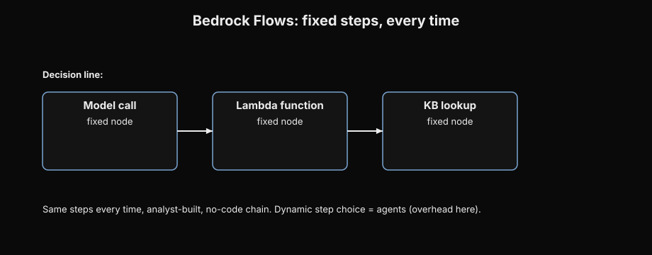
A Bedrock Flow is a deterministic prompt chain: a fixed sequence of model calls, Lambda functions, and knowledge base lookups connected as nodes, running the same steps every time. Use flows when the scenario says "same steps every time," "fixed sequence," "analyst-built," or "no-code chain." Agents are overhead here: paying a reasoning model to decide steps that never change. The exam's decision line is one sentence: dynamic step choice means agents, fixed sequence means flows. Watch for fabricated features in options: Flows have no S3 copy node, no invented action nodes. Verify node lists before picking.
Orchestration and the timeout math
GenAI work is rarely one call. A pipeline classifies, extracts, validates, waits for human review, then publishes. A Lambda trying to do that hits its 15-minute (900-second) ceiling and has no durable memory of where it was if it crashes. Step Functions keeps execution state durably, retries with backoff, and can pause. Two flavors, never swapped. Standard runs up to 1 year, costs about $0.025 per 1,000 state transitions, and supports wait-for-callback: a task token lets the workflow pause indefinitely for a human approval, then resume exactly where it left off. The wait itself is free. Express is for short high-volume flows: 5-minute maximum duration, no callbacks. "Approval takes hours" is always Standard with wait-for-callback; Express cannot pause.
For parallel bulk work, Distributed Map fans out to up to 10,000 parallel child executions over S3 objects: the answer to "process 10k objects in a tight window." Sequential dies on the clock; plain Lambda fan-out dies on orchestration overhead. Timeout math you must do in your head: a REST API Gateway in front of a Lambda has a 29-second integration timeout. A model streaming 100 tokens per second for a 3,000-token answer takes 30 seconds, so a synchronous call through the gateway fails even though Lambda itself could run 15 minutes. The fix is async (return a job ID, poll or push the result) or WebSocket streaming.
Worked example: the timeout math
Streaming speed: 100 tokens per second. Answer size: 3,000 tokens. Time = 3,000 / 100 = 30 seconds. API Gateway REST integration timeout: 29 seconds. 30 > 29, so the call dies at the gateway even though the Lambda behind it could run 900 seconds. The fix moves off the request-response path: WebSockets, or async with polling.
The API front door and async patterns
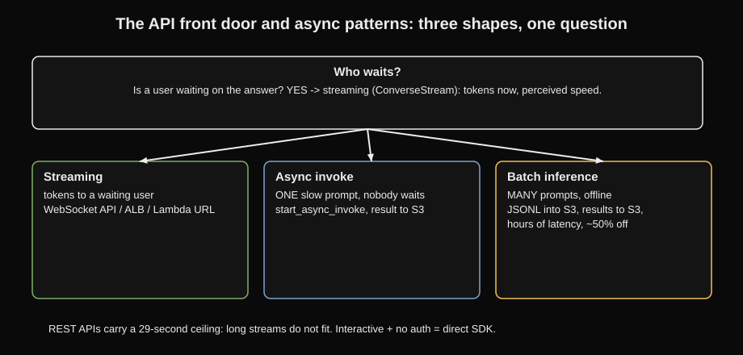
API Gateway is the stable endpoint in front of Bedrock: one URL, auth, throttling, and usage plans, while the model behind it changes. Direct SDK calls win only when latency is king and no auth is needed. For streaming, use WebSocket APIs, an Application Load Balancer (a load balancer that spreads incoming HTTP traffic across targets), or Lambda function URLs; REST endpoints carry the 29-second ceiling and do not fit long streams. The async single-request pattern is start_async_invoke: the call returns an invocation ARN and the result lands in S3. The exam's three-way split: batch is many prompts from S3, async is one slow prompt nobody waits on, streaming is tokens to a waiting user. Spiky traffic gets SQS buffering plus reserved concurrency for the critical function.
Prompts as code: Prompt Management and AppConfig
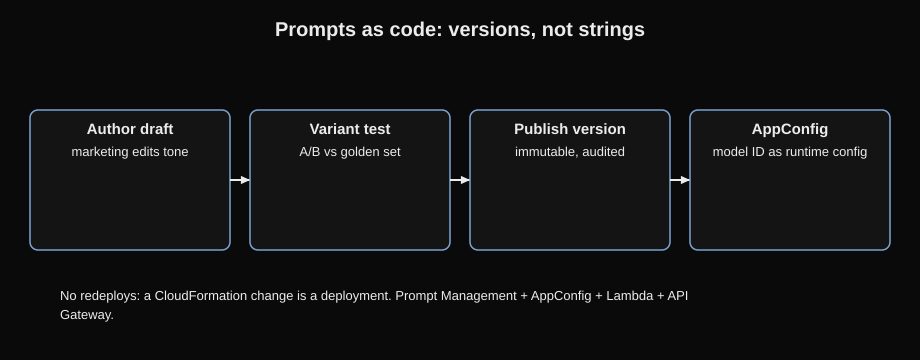
Prompts are code, so they get versions. Bedrock Prompt Management stores prompt templates as versioned resources with variants (test two versions side by side) and variables (placeholders filled at runtime). It is the answer to "15 prompts, marketing changes tone weekly, no redeploys": marketing edits a draft variant, tests against a golden set, publishes a new version, zero engineering deploys, full audit trail. "Versioned prompt templates reused across flows" is always Prompt Management, not DynamoDB, not env vars. For runtime model switching without redeploys, the trio is AppConfig (the model ID as runtime config) plus Lambda (routing) plus API Gateway (stable URL). A CloudFormation change is a deployment, so it violates "no redeploy" every time.
D2 decision rules: if the stem says X, pick Y
- "Reasons, decides steps, chooses tools" → Bedrock Agents (action groups + Lambda).
- "Fixed sequence, same steps every time" → Bedrock Flows. Agents are overhead.
invoke_agentneedsagentId+agentAliasId(PROD, never DRAFT) +sessionId(one per user) +inputText. Returns a stream you iterate.- "Agent ignores the new action group" → PrepareAgent was skipped.
- "Show why the agent did that" →
enableTrace=true. - Lambda action function: parameters arrive as a LIST of name/value dicts; response echoes the nested shape with the result in
responseBody.TEXT.body. - "Task runs longer than 15 minutes" → Step Functions, not Lambda.
- "Human approval takes hours" → Step Functions Standard with wait-for-callback. Express caps at 5 minutes and cannot pause.
- "Process 10k S3 objects in a tight window" → Distributed Map (up to 10k parallel children).
- "Streaming answers time out" → WebSockets or async with polling. Not a bigger Lambda timeout; the 29-second ceiling sits at API Gateway.
- "Stable URL, auth, throttling" → API Gateway + Lambda. Direct SDK only when latency is king and no auth is needed.
- "Versioned prompt templates, no redeploys" → Prompt Management. "Swap models without redeploying" → AppConfig.
- "Quality gate before deploy" → Bedrock evaluation jobs in the pipeline; deploy only above the score threshold.
D2 trap patterns
- Lambda waiting, sleeping, or polling past 15 minutes. It dies.
- Agent ID alone in production, routing to DRAFT instead of the PROD alias.
- One sessionId shared across users, leaking conversation memory.
- Express for hours-long human waits. 5-minute cap, no callbacks.
- Raising the Lambda timeout for gateway timeouts. The 29-second ceiling is at API Gateway.
- Fabricated Flow nodes (S3 copy node). Verify node and feature lists.
- CloudFormation for runtime switching. Config changes are deployments; AppConfig is runtime.
- Agents for fixed sequences. Reasoning overhead with no benefit.
- Multi-tenant agents without per-KB IAM filtering. Tenants must not reach each other's data.
D2 rapid-fire questions
D2 · EASY · ONE ANSWER
CC15. An order assistant must check inventory via API, check shipping via another API, then decide what to tell the customer. The steps vary per order. Agents or Flows?
Why A is correct: "steps vary," "decide," multi-tool: the dynamic-step line points at agents. Fixed same-steps-every-time would point at Flows.
D2 · EASY · ONE ANSWER
CC16. invoke_agent must use the PROD deployment, not the draft. Which parameter?
Why B is correct: the alias selects the deployment. Full call shape: agentId + agentAliasId + sessionId + inputText, and the response is a stream you iterate.
D2 · MEDIUM · ONE ANSWER
CC17. An agent ignores a newly added action group. First check?
Why A is correct: skip prepare-agent and the agent silently runs the old config. "Config changed but behavior did not" always means prepare was skipped.
D2 · EASY · ONE ANSWER
CC18. A Lambda action function receives event["parameters"]. What shape?
Why B is correct: the fixed contract. The response must echo messageVersion, actionGroup, and function with the result string in responseBody.TEXT.body.
D2 · EASY · ONE ANSWER
CC19. A claim pipeline must pause for manager approval, averaging 6 hours, then resume. Which orchestration?
Why B is correct: hours-long waits need Standard's task-token callback (runs up to 1 year; the wait itself is free). Express is for short high-volume flows.
D2 · MEDIUM · ONE ANSWER
CC20. A chatbot streams answers that can take 90 seconds; users see timeouts behind a REST API. Fix?
Why B is correct: timeout math. 90 seconds exceeds the 29-second REST integration timeout, so the stream must move off the request-response path.
D2 · MEDIUM · ONE ANSWER
CC21. 10,000 S3 objects must be processed in a 30-minute window. Which pattern?
Why A is correct: tight window over many objects is the Distributed Map shape. Find the killer constraint (the clock), then compare survivors.
D2 · MEDIUM · ONE ANSWER
CC22. Marketing changes prompt tone weekly; engineering redeploys are forbidden. Which service?
Why B is correct: "versioned prompt templates reused without redeploys" is the Prompt Management sentence. AppConfig answers "swap models without redeploying."
D2 · EASY · RECALL
CC23. A support bot reuses one sessionId for all users. What breaks?
Answer: conversation memory leaks between users. The session ID is the memory key, so one ID per user session.
D2 · EASY · RECALL
CC24. Compliance asks "show why the agent called that tool." Which flag?
Answer: enableTrace=true on invoke_agent. It returns the reasoning trace: which tools the agent chose and why.
D2 · MEDIUM · ONE ANSWER
CC25. One document-generation request takes 4 minutes; nobody waits on it. Which call shape?
Why B is correct: the three-way split. Batch is many prompts, async is one slow prompt nobody waits on, streaming is tokens to a waiting user.
D2 · MEDIUM · ONE ANSWER
CC26. Switch between Claude, Titan, and Llama without client redeploys. Which trio?
Why A is correct: the gateway URL stays fixed while the Lambda reads the model ID from AppConfig at runtime. CloudFormation is always the "redeploy" distractor.
Next: D3 guards what D2 built: guardrails at the model door, IAM at every account, and the audit trail that proves it.
D3: AI Safety, Security & Governance (20%)
D2 built the application; D3 guards it. A working app that leaks data, answers attacks, or cannot prove who did what is a failed app.
D3 tests the bouncer, the locks, and the audit trail. Guardrails filter content at the model boundary. IAM and organization controls decide who can touch what. CloudTrail, CloudWatch, and invocation logging record what happened at three different depths. The exam's favorite move is offering a real service with an invented capability, so learn exactly what each control can and cannot do.
Guardrails: the bouncer at the model door
A Bedrock Guardrail is a named configuration holding your safety rules. Every request and every response walks past it. Six policies, each switchable independently: content filters, denied topics, word filters, sensitive information filters (PII detection and redaction), contextual grounding checks, and Automated Reasoning checks. Attach it inline to a Converse call with guardrailConfig (guardrail identifier plus version, with a trace flag that shows what fired), or apply it to any text with the standalone ApplyGuardrail API, which is the answer when the scenario says "we call an external model but need AWS guardrails."
Content filters are the toxicity screen: six fixed AWS-defined categories (hate, insults, sexual, violence, misconduct, prompt attack), each with four sensitivity strengths, so 24 independent settings per guardrail. Prompt attack is the category that catches jailbreaks ("ignore all previous instructions") and injections smuggled through pasted documents or tool outputs; it is evaluated on inputs, where attacks arrive. Denied topics block named subjects on both inputs and outputs ("block bullying topics" is a denied topic, and "notify on bullying but never block" is the same filter run in a monitor mode that logs intervene events instead of blocking). Word filters block exact strings, including profanity lists and custom terms. Sensitive information filters detect and redact PII.
The two verifiers catch two different lies. Contextual grounding checks ask whether the answer is supported by the source text (the hallucination check for RAG). Automated Reasoning checks translate the response and your policy into formal logic and prove whether the response obeys the policy; it is the strongest guarantee in the guardrail set, the answer to "most mathematically certain that outputs obey policy." Note its limit: Automated Reasoning checks run in detect mode only, returning findings (valid, invalid, ambiguous, too complex) rather than blocking inline.
What guardrails can never do
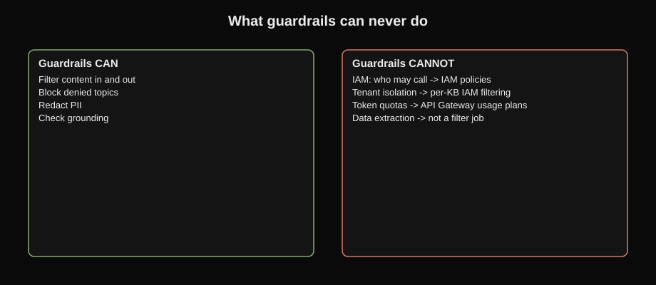
Guardrails filter content. They cannot do IAM (who may call the model), tenant isolation (which data a tenant may reach), token quotas or billing, or data extraction. When an option says "use Guardrails to limit each tenant to 1,000 tokens per day," it is a fabricated feature: real service, invented capability. Tenant isolation is per-knowledge-base IAM filtering; quotas are API Gateway usage plans; access control is IAM. Read every guardrail option for scope creep.
Identity and access: who can touch the model
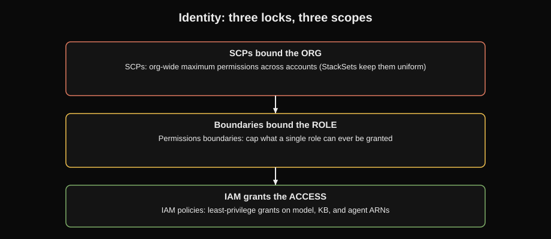
IAM is the first lock: least-privilege policies scoping which identities can invoke which model, knowledge base, and agent ARNs, in which regions. Above IAM sit the organization controls. Service Control Policies (SCPs) set org-wide maximum permissions across accounts in AWS Organizations: the answer to "restrict model access across 40 accounts," deployed at scale with StackSets (multi-account deployments of CloudFormation templates) so no account drifts. Permissions boundaries cap what a single role can ever be granted, the per-role answer. The exam pairs them as: SCPs bound the org, boundaries bound the role, IAM grants the actual access inside those bounds. "Built-in alignment is enough" is always wrong: the model provider's safety work never transfers evaluation and governance to you. The deployer owns both.
Observability: three logs, three depths
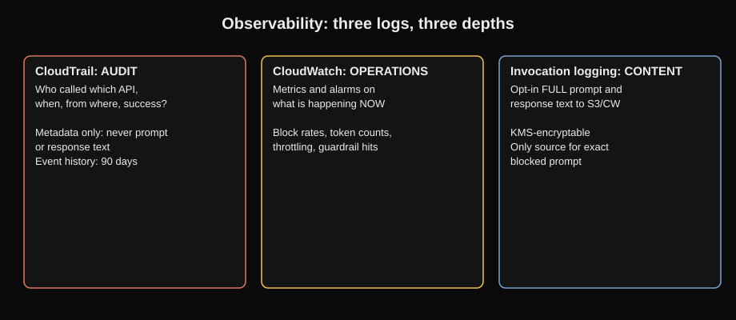
CloudTrail is the audit plane: who called which Bedrock API, when, from where, and whether it succeeded. It records API metadata only, never prompt or response content. Event history keeps 90 days; longer retention means delivering the trail to S3. "Who invoked which model at 2am" is always CloudTrail. CloudWatch is the operations plane: metrics and alarms on what is happening now. Which prompts were blocked and why, guardrail block rates, token counts, throttling: CloudWatch metrics and custom alarms. "Proactively alert" kills every reactive option: count tokens before the call with client-side estimation, because the InputTokenCount metric fires after the call runs. Model invocation logging is the content plane: the opt-in record of full prompt and response text to S3 or CloudWatch, KMS-encryptable. It is the only source for "show us the exact blocked prompt," and in regulated scenarios you must justify keeping it at all, with retention policies and redaction, because logs can contain PII.
Network and data protection
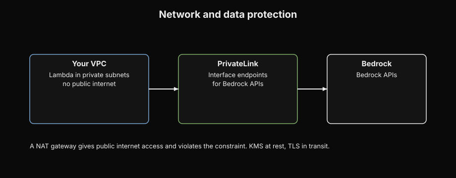
"Bedrock with no public internet" is always VPC interface endpoints (PrivateLink) for the Bedrock APIs, with Lambda in private subnets. A NAT gateway gives public internet access and violates the constraint. At rest is KMS (customer-managed keys, envelope encryption, every key use logged); in transit is TLS. Customer data sent to Bedrock is not used to train models under the service terms, and any data you log stays in your account. For human oversight of risky model outputs, A2I (Augmented AI) puts flagged interactions in front of human reviewers: critical flagged cases only, never all traffic.
D3 decision rules: if the stem says X, pick Y
- "Notify on bad content but do NOT block" → guardrail in monitor/detect mode with intervene metrics. Block mode violates the constraint.
- "Block specific topics in and out" → denied topics policy on inputs and outputs.
- "Jailbreaks and prompt injections" → content filter category prompt attack, evaluated on inputs.
- "Most mathematically certain outputs obey policy" → Automated Reasoning checks (detect mode, formal logic).
- "Is the answer supported by the source" → contextual grounding check. "Does it obey the policy" → Automated Reasoning. Two verifiers, two lies.
- "External model but need AWS guardrails" → ApplyGuardrail standalone. guardrailConfig cannot reach outside Bedrock.
- "Who called which model and when" → CloudTrail. "Which prompts were blocked and why" → CloudWatch. "Full prompt and response text" → model invocation logging (opt-in).
- "Proactively alert before limits" → count tokens before the call. Metrics fire after.
- "Restrict models across the whole org" → SCPs (StackSets for deployment). "Cap one role" → permissions boundaries.
- "Bedrock with no public internet" → interface VPC endpoints. NAT gateway violates the constraint.
- "Critical flagged interactions need human review" → A2I. Not all traffic.
- "Customer data must not train models" → the service terms and opt-out; invocation log data stays in your account.
D3 trap patterns
- Guardrails offered for IAM, tenant isolation, token quotas, or billing. Fabricated capability.
- CloudTrail offered for prompt content. Metadata only; content needs invocation logging.
- CloudWatch offered for "who called what." That is CloudTrail's job.
- "Built-in safety means we skip evaluation." The deployer owns evaluation and governance. Always.
- Guardrail attached to a CloudWatch log group to mask PHI. Guardrails attach to Bedrock model flows, not log groups.
- NAT gateway for "no public internet." It provides public internet access.
- Cross-region anything under data residency. Check the region first.
- Full invocation logging in a healthcare scenario with no retention policy. Logs can contain PII; question the logging itself.
- Automated Reasoning expected to block inline. It runs in detect mode only.
D3 rapid-fire questions
D3 · EASY · ONE ANSWER
CC27. "Block bullying topics in prompts and answers" versus "notify on bullying but never block." What changes?
Why B is correct: "notify but do not block" is the monitor-mode sentence. Block mode would violate the stated constraint.
D3 · MEDIUM · ONE ANSWER
CC28. Compliance wants the full prompt and response text for blocked calls. Which log?
Why B is correct: the three depths. CloudTrail is who/what/when, CloudWatch is what-is-happening-now, invocation logging is the content plane. Only B holds the actual text.
D3 · MEDIUM · ONE ANSWER
CC29. Restrict foundation model access across 40 AWS accounts with no drift. Which control?
Why A is correct: SCPs set the org-wide maximum; StackSets deploy them at scale. Permissions boundaries would cap a single role, not the org.
D3 · EASY · ONE ANSWER
CC30. Bedrock must run in a VPC with no public internet. Which networking?
Why B is correct: interface endpoints keep traffic on the AWS network with no internet path. "No public internet" is always endpoints, never NAT.
D3 · MEDIUM · ONE ANSWER
CC31. The team calls an external (non-Bedrock) model but compliance requires AWS guardrails on its outputs. How?
Why B is correct: ApplyGuardrail applies guardrail policies to any text, including non-Bedrock output. This is the exam's favorite guardrail scope trap.
D3 · MEDIUM · ONE ANSWER
CC32. "Most mathematically certain that outputs obey policy" for a financial advice bot. Which check?
Why B is correct: formal logic verification is the strongest guarantee in the guardrail set. Note its limit: detect mode only, returning findings rather than blocking inline.
D3 · MEDIUM · ONE ANSWER
CC33. "Protect PII in customer-service GenAI conversations with minimal custom work." Select the set.
Why A is correct: the pipeline order. Macie finds PII in the lake before ingestion, Comprehend detects it in live text, Guardrails filter it at the model boundary.
D3 · EASY · RECALL
CC34. Name the six guardrail policies.
Answer: content filters, denied topics, word filters, sensitive information filters, contextual grounding checks, Automated Reasoning checks. Content filters alone hold 24 settings: 6 categories times 4 strengths.
D3 · EASY · RECALL
CC35. CloudTrail event history keeps how many days? And what does CloudTrail never record?
Answer: 90 days (deliver the trail to S3 for longer). It never records prompt or response content, only API metadata.
D3 · MEDIUM · ONE ANSWER
CC36. An option says "use Guardrails to cap each tenant at 1,000 tokens per day." Verdict?
Why A is correct: the scope trap. Real service plus invented capability. Guardrails never do IAM, tenant isolation, token quotas, or billing.
D3 · MEDIUM · ONE ANSWER
CC37. "Proactively alert before token limits are hit." Alarm on the InputTokenCount metric or count tokens before the call?
Why B is correct: proactive means before the call. Token math (input plus output tokens times price) happens client-side, ahead of time.
D3 · EASY · RECALL
CC38. At rest is KMS, in transit is TLS. A healthcare scenario enables full invocation logging with no retention policy. What is wrong?
Answer: logs can contain PII/PHI, so the design needs retention policies and redaction, or a justification to disable logging. The exam expects you to question the logging itself in regulated scenarios.
Next: D4 makes the guarded app cheap and fast: token math, caching, batch, Provisioned Throughput, and the timeout math that kills synchronous designs.
D4: Operational Efficiency & Optimization (12%)
D3 made the app safe; D4 makes it cheap and fast. Safety means little if the bill or the latency kills the project.
D4 is the smallest scored domain but the densest in decision rules. Every question is a cost, latency, or capacity scenario, and the stem's adjective names the winner before you read the options. Learn the three adjectives and the three-way routing confusion set, and D4 becomes free points.
The three adjectives, three different winners
"Least operational overhead" means fewest self-managed components: Aurora Serverless over a self-managed OpenSearch cluster, Converse over hand-rolled provider bodies, managed routers over your Lambda code. "Least custom development effort" means managed features over your own code: Knowledge Bases over a hand-built ingestion pipeline, prompt routers over your classifier Lambda, Guardrails over hand-rolled filters. "Most cost-effective" means token math: the smallest model that clears the quality bar, caching for repeated prefixes, batch for offline bulk, cascading simple queries to cheap models. The exam rotates these adjectives across identical scenarios; the scenario does not change, the winner does.
The levers in cost order
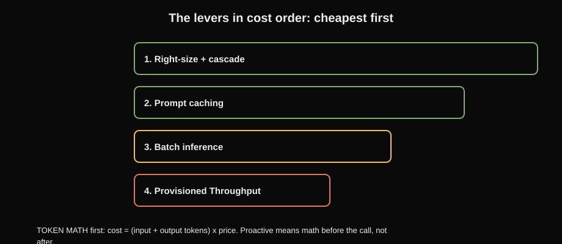
Right-sizing and cascading come first because they cut every token. Pick the smallest model that clears the quality bar on your golden dataset, then automate it: a router or cascade sends simple requests (classification, extraction, short answers) to a cheap lightweight model and escalates only complex ones to the flagship. Prompt caching comes next for repeated long prefixes: mark the shared block with cachePoint, pay the reduced input-token rate on hits, and prove it with cache read hit rate. Batch inference handles offline bulk: JSONL into S3, results to S3, hours of latency, roughly 50 percent off on-demand. Provisioned Throughput is last in cost order and first in capacity order: model units on 1 or 6 month terms, hourly billing whether used or not, invocations routed to the provisioned ARN. It guarantees latency and kills throttling on steady baselines; on spiky traffic it bills you for sleeping hours, so spiky stays on-demand.
TOKEN MATH (do this before the call, not after)
cost = (input_tokens + output_tokens) x price_per_token
cache hit: input_tokens x cached_rate (reduced rate on the repeated prefix)
batch: cost x ~0.5 (offline only, hours of latency)
PT: model_units x hourly_rate x hours in term (used or not)
Estimate per request, multiply by volume, compare options.
"Proactive" cost control means this math happens client-side.Worked example: token math on one million requests
Say a chatbot handles 1,000,000 requests a month. Each request averages 2,000 input tokens and 500 output tokens. Use round illustrative prices: $3 per million input tokens, $15 per million output tokens.
On-demand cost per request: input part = 2,000 / 1,000,000 x $3 = $0.006; output part = 500 / 1,000,000 x $15 = $0.0075. Total per request = $0.0135. Monthly = $0.0135 x 1,000,000 = $13,500.
Batch inference at roughly 50% off: $13,500 x 0.5 = $6,750 a month, but only if nobody waits on the answers. That "roughly half" is the whole batch argument.
Prompt caching: if 1,800 of the 2,000 input tokens are a repeated system prompt and cache hits bill at one-tenth the rate ($0.30 per million), the input part drops to (200 / 1,000,000 x $3) + (1,800 / 1,000,000 x $0.30) = $0.0006 + $0.00054 = $0.00114 per request. Same answers, roughly one-sixth the input cost. The precondition is real: the prefix must actually repeat.
Streaming is the latency lever that is not a cost lever: ConverseStream cuts perceived latency to the first token (often under a second) while total generation time is unchanged. "Users report slow responses" on interactive traffic is always streaming. PT does not speed first token; caching needs repeated prefixes. For throttling, the fix ladder is: retry with backoff for transient throttles, PT for sustained throttles on steady traffic, routers to shed load to cheaper models, and profiles to spread across regions. "Bought PT but still throttles" means the code passes the base model ID instead of the provisioned ARN.
The confusion set one more time, because the exam tests it directly: inference profiles route by region for availability, prompt routers route by complexity for cost, Provisioned Throughput reserves capacity by the hour. Regional failover wants a profile. Simple queries on an expensive flagship want a router. Throttled at peak on steady traffic wants PT. If you mix them up, the distractor wins.
D4 decision rules: if the stem says X, pick Y
- "Least operational overhead" → fewest self-managed components. "Least custom development effort" → managed features. "Most cost-effective" → token math.
- "Throttled at peak, steady traffic" → Provisioned Throughput (provisioned ARN as modelId). "Spiky or low traffic" → on-demand.
- "80% simple queries on the flagship" → prompt router or cascade. Never PT for a cost problem.
- "Repeated long prefix" → prompt caching; proof is cache read hit rate. "Unique traffic" → caching is dead weight.
- "Nightly bulk, no SLA" → batch inference (~50% off). Never for interactive SLAs.
- "Slow first token, users complain" → streaming. Not PT, not caching.
- "Regional failover" → inference profiles. "Cost by complexity" → prompt routers. Never swap them.
- "Cheapest option that meets every requirement wins." Premium extras with no stated need lose.
D4 trap patterns
- PT as a cost fix for bursty traffic. It bills hourly whether used or not.
- PT as a latency fix for slow first token. Capacity is not perceived latency.
- Prompt routers for availability, inference profiles for cost. Swapped pair.
- Caching on unique traffic. No repeated prefix, no savings.
- Batch for interactive SLAs. Hours of latency violates the SLA.
- Total token spend as proof caching works. The metric is cache read hit rate.
- Bigger model as the quality answer without a golden-dataset check. Right-size first.
- Reactive metrics for "proactive" requirements. Count before the call.
D4 rapid-fire questions
D4 · MEDIUM · ONE ANSWER
CC39. Token costs are growing; 80% of requests are simple FAQ lookups on the flagship model; quality must not drop. Best fix?
Why B is correct: the tell is "simple queries on an expensive model." Routers route by complexity for cost; a lightweight model that scores identically on simple extraction is correctly sized, not lower quality.
D4 · MEDIUM · ONE ANSWER
CC40. Steady production traffic throttles at peak on on-demand. Which fix, and what is the routing gotcha?
Why A is correct: steady plus throttled is the PT shape (model units, 1 to 6 month terms, hourly billing). The ARN is the whole game: reserved capacity only serves traffic addressed to it.
D4 · EASY · ONE ANSWER
CC41. "Cheapest for nightly 500k-row classification, no SLA." Which inference?
Why B is correct: no SLA plus bulk equals batch. Hours of latency is fine; the ~50% discount is the point.
D4 · MEDIUM · ONE ANSWER
CC42. "Users report slow responses" on unique interactive queries. Streaming, PT, or caching?
Why A is correct: "slow responses" on interactive traffic is perceived latency, and streaming is the only lever that moves first-token time.
D4 · MEDIUM · ONE ANSWER
CC43. A scenario needs regional failover AND cost-based routing. Which combination?
Why A is correct: the confusion set composed. Router for cost, profile for availability, stacked together. PT would answer a capacity question nobody asked.
D4 · EASY · RECALL
CC44. Which metric proves prompt caching is working?
Answer: cache read hit rate. Total token spend moves for many reasons; the hit rate isolates the cache.
D4 · MEDIUM · ONE ANSWER
CC45. Traffic is spiky with long idle nights. The team proposes Provisioned Throughput "to save money." Verdict?
Why A is correct: match the pricing model to the traffic shape. Spiky or low traffic stays on-demand; PT serves the predictable baseline.
D4 · EASY · RECALL
CC46. Recite the three adjectives and their winners.
Answer: "least operational overhead" wins with fewest self-managed components; "least custom development effort" wins with managed features over your code; "most cost-effective" wins with token math (smaller model, caching, batch, cascade).
D4 · EASY · RECALL
CC47. Prompt caching preconditions: minimum prefix and TTL.
Answer: repeated long prefix, minimum on the order of a thousand tokens (model-dependent). TTL 5 minutes by default, up to 1 hour on supported models. Mark the boundary with cachePoint.
D4 · MEDIUM · ONE ANSWER
CC48. The prompt router's default fallback model fires on most traffic. What is wrong?
Why A is correct: the fallback is the router admitting it cannot decide. The fix is evaluation-driven boundary tuning, not a bigger model.
Next: D5 proves the app works and fixes it when it does not: the eval ladder, then change-point debugging.
D5: Testing, Validation & Troubleshooting (11%)
Everything so far assumed the app works. D5 proves it and fixes it when it does not.
D5 asks one question in many forms: how do you prove a GenAI app works, and how do you fix it when it does not? The proof half is evaluation, climbed cheapest first. The fix half is change-point debugging: the broken thing is whatever changed most recently.
The evaluation ladder: automatic, then judge, then human
Automatic evaluation (programmatic) compares model outputs against known-correct answers with deterministic code. It needs a labeled dataset: every prompt carries a ground truth label. Built-in metrics are accuracy (did it match), stability (does the answer survive small prompt perturbations like typos; the console calls this robustness), and toxicity (harmful content check). A 1,000-prompt automatic eval on a small model costs a few dollars and finishes in minutes, which is why it belongs in every CI pipeline. LLM-as-a-judge uses a separate model to score outputs for correctness, completeness, faithfulness, harmfulness, refusal, and style/tone, with custom metrics definable. It needs no labels, so it scales to unlabeled data, but a judge call costs a judge call. Human evaluation is the last resort: subjective judgment on samples only, never everything, never under a budget.

The ladder in practice: compare models cheaply at scale with automatic metrics first, run LLM-as-a-judge on the survivor, put humans on flagged samples only. "Two days to compare two models" is this ladder in cost order. RAG gets its own eval split: retrieval relevance (did we fetch the right chunks) plus generation faithfulness (is the answer supported by the chunks), LLM-as-judge powered. "Prove the RAG system does not hallucinate" is retrieval plus faithfulness, not a bigger model. Provider benchmarks never decide your model choice: they measure the provider's prompts, not yours. Your own eval job on your golden dataset is the only score that counts. New prompt versions, new model versions, and new guardrail versions all pass through the same CI/CD eval gate (an automated quality check inside the continuous integration and deployment pipeline): score above the threshold or do not deploy. A/B testing with two aliases and shadow traffic (copies of real user requests routed to the new version, invisible to users) through inference profiles catch regressions the gate misses.
Troubleshooting: debug the delta
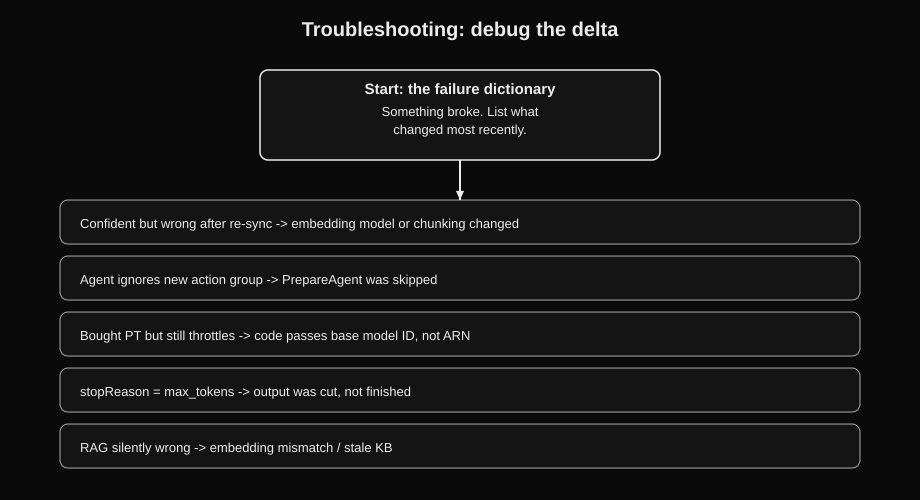
Change-point debugging is the whole method: list what changed most recently, debug that first. "Answers confident but wrong after a re-sync" means the re-sync changed the embedding model version or chunking config. "Model ignores the new prompt template" means the Prompt Management version was never published, or AppConfig is serving a cached value. "Agent ignores the new action group" means prepare-agent was skipped. "Bought PT but still throttles" means the code passes the base model ID, not the provisioned ARN.
The failure dictionary: AccessDenied on InvokeModel means check model access and regional availability before touching IAM. Throttling means retry with backoff for transient spikes, PT for sustained load. stopReason guardrail_intervened means the guardrail blocked the call; check which policy fired with trace enabled. stopReason max_tokens on a good-looking answer means the output was cut. ValidationException on InvokeModel means the provider body is malformed (Claude needs anthropic_version and max_tokens), not an IAM problem. RAG retrieval failing silently means embedding mismatch, split chunks, or an out-of-sync knowledge base. Quality drift in production means scheduled eval jobs against the golden dataset plus CloudWatch anomaly detection on token metrics, not a hand-built pipeline.
D5 decision rules: if the stem says X, pick Y
- "Compare models cheaply at scale" → automatic metrics, then LLM-as-judge on the survivor, humans on flagged samples. Never humans-on-everything under a budget.
- "Needs ground truth" → automatic eval. "No labels available" → LLM-as-judge.
- "Prove RAG does not hallucinate" → retrieval relevance plus generation faithfulness.
- "Critical flagged interactions" → A2I human review loop. Not all traffic.
- "Something broke" → debug the most recent change first. Change-point debugging.
- "AccessDenied on InvokeModel" → model availability in the region before IAM.
- "Test without production traffic" → eval jobs with a golden dataset; A/B with two aliases; shadow traffic through inference profiles.
- "Deploy only if quality holds" → CI/CD eval gate with a score threshold.
D5 trap patterns
- Humans reading everything under a budget. The ladder climbs in cost order.
- Provider benchmarks as the model decision. Marketing until your own eval runs.
- Debugging IAM for a malformed provider body. ValidationException is the request shape.
- Debugging generation when retrieval changed. Debug the delta.
max_tokensstopReason read as finished. It means cut.- Deploying a new prompt or model version with no eval gate. Score threshold or no deploy.
- A2I on all traffic. Flagged samples only.
D5 rapid-fire questions
D5 · MEDIUM · ONE ANSWER
CC49. Two days to compare two models on your prompts, tight budget. Which eval order?
Why B is correct: the ladder climbs in cost order. Automatic is cheapest and needs labels; the judge needs none; humans are the last resort on samples.
D5 · MEDIUM · ONE ANSWER
CC50. "Prove the RAG system does not hallucinate." Which eval?
Why A is correct: the RAG eval split. Retrieval relevance asks "right chunks?", faithfulness asks "answer supported by them?" Together they are the hallucination proof.
D5 · EASY · ONE ANSWER
CC51. An InvokeModel call returns ValidationException. IAM or request shape?
Why B is correct: read the exception name. ValidationException means the body failed validation; the classic cause is a Claude body missing its required fields.
D5 · EASY · ONE ANSWER
CC52. Evaluator asks which model is better for YOUR prompts. Provider benchmark or your own eval job?
Why B is correct: the capability-floor filter. Only your prompts against your quality bar decide your model.
D5 · MEDIUM · ONE ANSWER
CC53. The model ignores a newly published prompt template at runtime. What are the two suspects?
Why A is correct: change-point debugging applied to config. Draft versus published version, and cached runtime config, are the two places a new template goes missing.
D5 · MEDIUM · ONE ANSWER
CC54. "Detect quality drift in production with minimal custom work." Which design?
Why B is correct: periodic eval jobs watch quality against the golden set; CloudWatch watches the quantitative signals. Managed, scheduled, minimal code.
D5 · EASY · RECALL
CC55. Which eval needs ground-truth labels, and which works unlabeled?
Answer: automatic (programmatic) evaluation needs labels for accuracy, stability, and toxicity. LLM-as-a-judge works unlabeled, scoring correctness, faithfulness, fluency, and more.
D5 · EASY · RECALL
CC56. A new model version is ready. What stands between it and production?
Answer: the CI/CD eval gate. The candidate runs against the golden dataset and deploys only above the score threshold. A/B with two aliases or shadow traffic catches what the gate misses.
D5 · MEDIUM · ONE ANSWER
CC57. Throttling errors spike on sustained traffic at peak. Retry with backoff or Provisioned Throughput?
Why B is correct: sustained throttling on steady traffic is the PT shape: dedicated capacity, no throttling from shared quotas. Transient spikes still get backoff.
D5 · EASY · RECALL
CC58. State the change-point debugging rule in one sentence.
Answer: the broken thing is whatever changed most recently, so debug the delta first.
Next: the numbers sheet: every hard number from all five domains on one table.
Must-memorize numbers
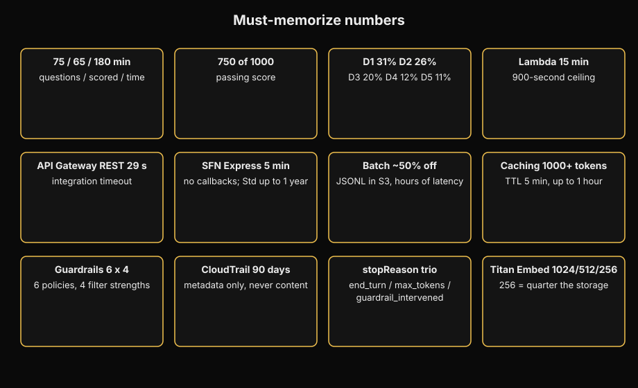
| Item | Number |
|---|---|
| Questions / scored / time / pass | 75 / 65 / 180 min / 750 of 1000 |
| Domain weights (scored questions approx) | D1 31% (~20), D2 26% (~17), D3 20% (~13), D4 12% (~8), D5 11% (~7) |
| Lambda max duration | 15 minutes (900 seconds) |
| API Gateway REST integration timeout | 29 seconds |
| Step Functions Express max duration | 5 minutes, no callbacks |
| Step Functions Standard max duration | Up to 1 year; about $0.025 per 1,000 state transitions; waits are free |
| Step Functions Distributed Map parallel children | Up to 10,000 over S3 objects |
| Batch inference discount | ~50% off on-demand; JSONL into S3, results to S3, hours of latency |
| Provisioned Throughput terms | Model units, commonly 1 or 6 month terms, hourly billing whether used or not; invoke the provisioned ARN |
| Prompt caching | Repeated prefix ~1,000+ tokens (model-dependent); TTL 5 min default, up to 1 hour; proof is cache read hit rate |
| Titan Text Embeddings v2 dimensions | 1024, 512, or 256 (256 cuts storage to a quarter of 1024) |
| Cohere Embed languages; input_type | 100+ languages; search_query versus search_document |
| Guardrail content filters | 6 categories (hate, insults, sexual, violence, misconduct, prompt attack) x 4 strengths = 24 settings |
| Guardrail policies | 6: content filters, denied topics, word filters, sensitive info filters, contextual grounding, Automated Reasoning |
| stopReason values | end_turn (done), max_tokens (cut, not finished), guardrail_intervened (blocked) |
| CloudTrail event history | 90 days; metadata only, never prompt or response content |
| Comprehend PII entity types | 30+ (names, SSNs, account numbers) |
| Claude InvokeModel required fields | anthropic_version "bedrock-2023-05-31" and max_tokens |
| Small vector dataset threshold | Under ~1M records: Aurora Serverless with pgvector; large: OpenSearch Serverless |
| Fine-tuning data scale | Hundreds to a few thousand labeled examples in S3; jobs run for hours |
Top 50 traps in one line each
- Fine-tuning for knowledge: quarterly docs, citations, fresh facts. Always RAG.
- Converse offered for embeddings. Converse is text generation only; embeddings need InvokeModel.
- Guardrails assumed Converse-only. ApplyGuardrail covers any text, including external models.
- Provider benchmarks deciding the model. Only your golden-dataset eval counts.
- AccessDenied on InvokeModel debugged as IAM. Check model access and regional availability first.
- Missing anthropic_version or max_tokens in a Claude body, then an hour of IAM debugging. The error is the request shape.
- Cross-region inference profile under data residency. Profiles move data across regions.
- Provisioned Throughput as a cost fix for bursty traffic. It bills hourly whether used or not.
- Prompt caching on unique traffic. No repeated prefix, no savings.
- ElastiCache as a vector store. Ephemeral caching; durable vectors live in a vector store.
- Kendra offered for RAG. Kendra is enterprise search, not the RAG path.
- stopReason max_tokens read as finished. It means the output was cut.
- Temperature and topP both set. They interact; pick one.
- Lambda waiting, sleeping, or polling past 15 minutes. It dies.
- Agent ID alone in production, routing to DRAFT instead of the PROD alias.
- One sessionId across users, leaking conversation memory.
- Express for hours-long human waits. 5-minute cap, no callbacks.
- Raising the Lambda timeout for gateway timeouts. The 29-second ceiling is at API Gateway.
- Fabricated Flow nodes (S3 copy node). Verify node and feature lists.
- CloudFormation for runtime switching. Deployments are not runtime; AppConfig is.
- Agents for fixed sequences. Reasoning overhead with no benefit.
- Multi-tenant agents without per-KB IAM filtering. Tenants must not reach each other's data.
- Guardrails offered for IAM, tenant isolation, token quotas, or billing. Fabricated capability.
- CloudTrail offered for prompt content. Metadata only; content needs invocation logging.
- CloudWatch offered for who-called-what. That is CloudTrail's job.
- "Built-in safety means we skip evaluation." The deployer owns evaluation and governance. Always.
- Guardrail attached to a CloudWatch log group to mask PHI. Guardrails attach to Bedrock model flows, not log groups.
- NAT gateway for no public internet. It provides public internet access.
- Full invocation logging in healthcare with no retention policy. Logs can contain PII; question the logging.
- Automated Reasoning expected to block inline. It runs in detect mode only.
- PT as a latency fix for slow first token. Capacity is not perceived latency.
- Routers for availability, profiles for cost. Swapped pair.
- Batch for interactive SLAs. Hours of latency violates the SLA.
- Total token spend as proof caching works. The metric is cache read hit rate.
- Bigger model as the quality answer without a golden-dataset check. Right-size first.
- Reactive metrics for "proactive" requirements. Count before the call.
- Humans reading everything under a budget. The ladder climbs in cost order.
- Debugging IAM for a malformed provider body. ValidationException is the request shape.
- Debugging generation when retrieval changed. Debug the delta.
- Deploying a new prompt or model version with no eval gate. Score threshold or no deploy.
- A2I on all traffic. Flagged samples only.
- Embedding tables into a vector store. Relational data gets text-to-SQL.
- Different embedding model at query time than ingestion. Retrieval silently breaks.
- Custom model served with the base model ID. Fine-tuned models need Provisioned Throughput.
- Direct SDK calls when the scenario needs auth and throttling. That is the API Gateway answer.
- "Least operational overhead" answered with self-managed components. The adjective picks managed.
- Cheapest option that meets every requirement loses to a premium extra with no stated need. It never does; cheapest-that-fits wins.
- Skipping the PoC and buying PT before validation. On-demand first, prove it, then commit.
- Treating action-group parameters as a dict. They arrive as a list of name/value dicts.
- Forgetting enableTrace when asked to explain agent behavior. It is the transparency answer.
You finished the crash course. Missed more than five rapid-fire questions? Re-read the decision rules for the domains you missed, then drill the full question bank. Missed five or fewer? You are ready to schedule.
Where to go next. This volume was the sprint. For anything that felt thin, go deep in the matching domain volume, D1 through D5 in exam-weight order. Then take the 75-question mock exam in the question bank and drill new angles in How AWS Asks.